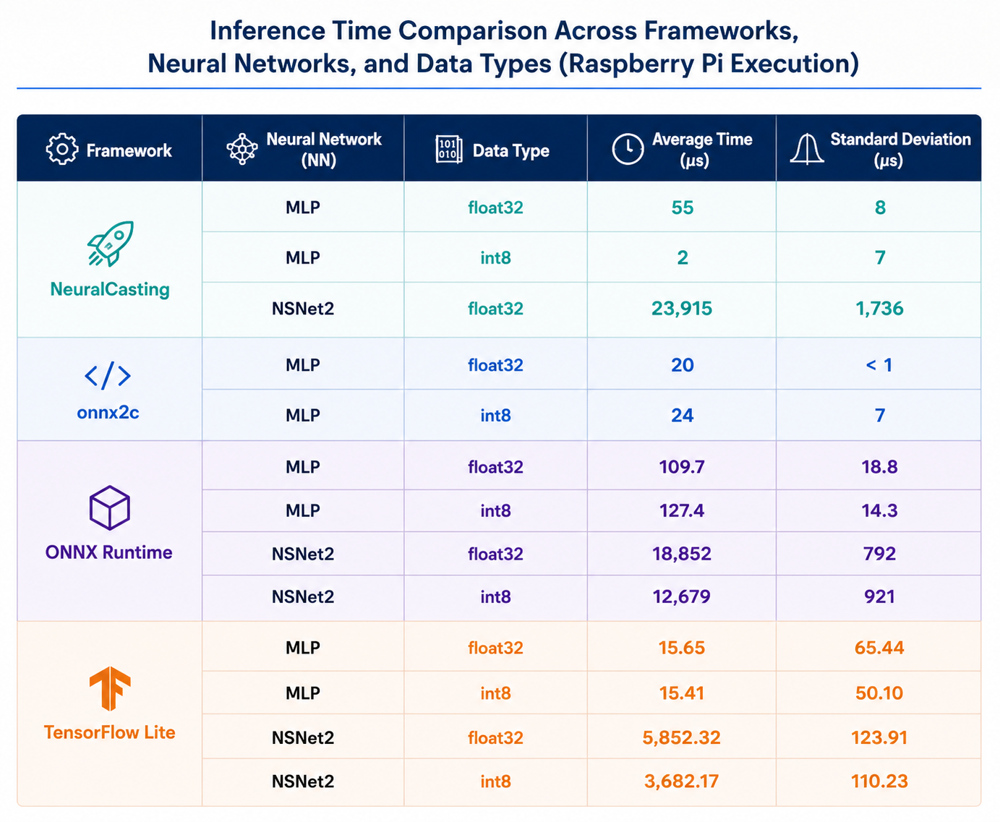

Publications
Selected research contributions in TinyML and embedded AI
Deployment of Quantized Deep Noise Suppression on Real-Time Edge Platforms
Published in IEEE ISORC, 2026

Efficient Detection of Microplastics on Edge Devices with Tailored Compiler for TinyML Applications
Published in IEEE Access, 2025

Time-Predictable Deep Noise Suppression on an Edge Device
NeuralCasting + Patmos for predictable, efficient speech enhancement on embedded devices
Published in IEEE ISORC Workshop, 2025
Motivation & Key Challenges
- Need for real-time noise suppression on edge devices such as hearing aids and headsets, where latency affects audio quality.
- Deep learning models like NSNet2 offer strong denoising performance but are computationally heavy and memory-demanding.
- Ensuring time-predictable execution on resource-constrained embedded hardware remains challenging.
- The system must balance accuracy, latency, and resource usage without over-provisioning hardware.
Proposed Approach & Methods
- Integrates NeuralCasting with the Patmos processor to enable time-predictable deep learning inference.
- Uses an end-to-end pipeline: PyTorch → ONNX → C code via NeuralCasting → Patmos compilation → WCET analysis with Platin.
- Applies 8-bit quantization with fixed-point arithmetic and lookup tables for activation functions to reduce computation cost.
- Uses DAG-based code generation, static memory allocation, and removal of runtime overhead to improve efficiency and predictability.
Results & Conclusions
- NSNet2 successfully runs on Patmos with a WCET of about 64M cycles and measured runtime of about 28.6M cycles.
- The gap between WCET and actual runtime highlights the importance of worst-case analysis in real-time systems.
- Fixed-point optimizations drastically reduce execution time, from about 12B cycles to about 28M cycles.
- The paper shows that time-predictable deep noise suppression on edge devices is feasible, with a trade-off due to quantization error.
Neural Architecture Search for Efficient Mixed-Precision Quantization in Audio Denoising
Optimizing NSNet2 for quality, speed, and memory on embedded devices
Published in IEEE PerCom Workshop (PerConAI), 2025
Motivation & Key Challenges
- Deep learning for audio denoising is effective but difficult to deploy on resource-constrained edge devices due to high memory and computation requirements.
- Standard quantization reduces computational cost but introduces accuracy loss, especially when using uniform precision across all layers.
- There is a need to balance audio quality (PESQ), inference time, and memory footprint.
- Manual tuning of mixed-precision configurations is impractical due to the large search space (e.g., 93 quantizable operations in NSNet2).
Proposed Approach & Methods
- Introduces a Neural Architecture Search (NAS) framework based on evolutionary algorithms to optimize mixed-precision quantization.
- Each candidate solution is represented as a chromosome encoding bit-widths (8, 16, 32-bit) for weights and activations across the network.
- Uses multi-objective optimization combining inference time, memory footprint, and PESQ score (audio quality metric).
- Evaluation pipeline includes C-based inference benchmarking and PyTorch-based PESQ simulation for hardware- and audio-aware optimization.
Results & Conclusions
- Achieves approximately 29.9% reduction in inference time and 57.9% reduction in memory footprint compared to the float32 baseline.
- Maintains near-baseline audio quality with negligible PESQ degradation.
- The evolutionary NAS converges to Pareto-optimal solutions balancing performance and quality.
- Demonstrates that mixed-precision quantization is highly effective for deploying efficient audio models on edge devices without retraining.

Read the full paper on IEEE Xplore
NeuralCasting: A Front-End Compilation Infrastructure for Neural Networks
From ONNX graphs to portable, optimized C for edge and bare-metal devices
Published in IEEE IOTSMS, 2024
Motivation & Key Challenges
- Deploying neural networks on edge and embedded systems is challenging due to constraints on latency, memory, energy, and hardware compatibility.
- Existing frameworks (e.g., ONNX Runtime, PyTorch) rely on runtime engines that introduce overhead and limit deployment on bare-metal systems.
- Neural networks are not well-suited to traditional compiler representations (AST), requiring graph-based approaches like DAGs.
- There is a need for efficient compilation techniques that enable real-time inference with minimal abstraction layers.
Proposed Approach & Methods
- Introduces NeuralCasting, a front-end compiler that converts ONNX neural networks into optimized C code without requiring an inference runtime.
- Uses a pipeline based on parsing ONNX models, building a DAG representation, and generating code through DAG traversal.
- Implements template-based C code generation with dependency-aware scheduling (Not-Ready, Ready, Generated states).
- Includes optimizations such as static/heap memory management and automatic parallelization using OpenMP.
Results & Conclusions
- Generated C code achieves competitive or superior performance compared to ONNX Runtime and PyTorch, especially for small models.
- Up to ~10× speedup is observed for small MLP models, making the approach suitable for edge deployment.
- Demonstrates strong performance on multiple architectures (x86 and Raspberry Pi), particularly for latency-sensitive applications.
- Confirms that removing runtime overhead enables efficient real-time inference on resource-constrained and bare-metal systems.